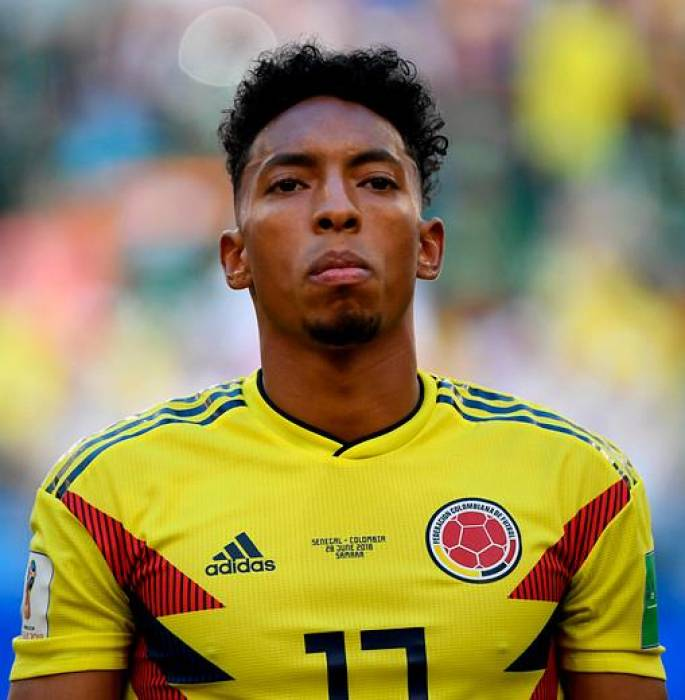

- Johan Mojica
 El 20 de marzo de 2015 fue llamado por José Néstor Pekerman para los partidos amistosos frente a las selecciones de Baréin y de Kuwait los días 26 y 30 de marzo respectivamente. Frente a Baréin hizo su debut con la selección mayor de Colombia jugando los últimos 27 minutos del encuentro y marcando su primer gol sobre el minuto 80 del partido.
El 16 de marzo de 2018 volvió a ser llamado a la selección de Colombia para los amistosos previos a Rusia 2018 frente a Francia y Australia en Europa.6 El 14 de mayo de 2018 fue incluido por el entrenador José Pekerman en la lista preliminar de 35 jugadores para disputar la Copa Mundial de Fútbol de 2018.7 Finalmente fue seleccionado en la lista final de 23 futbolistas, jugando los cuatro partidos como titular tras la lesión de Frank Fabra. Caerían eliminados en octavos de final por penales 3-4 ante Inglaterra. - Juan Guillermo Cuadrado
Hernán Darío Gómez lo convocó para una serie de partidos amistosos que se disputaron en el 2010 contra Venezuela. El 13 de mayo de 2014 fue incluido por Pékerman en la lista preliminar de 30 jugadores con miras a la Copa Mundial de Fútbol de 2014. Finalmente, fue seleccionado en la nómina definitiva de 23 jugadores el 2 de junio.
Cuadrado estuvo en la escuadra colombiana que llegó a los cuartos de final de la Copa América 2011 en Argentina. Su única aparición de la competición llegó en su último partido del grupo, una victoria por 2-0 sobre Bolivia en Santa Fe, en sustitución de Freddy Guarín después de 50 minutos.
Cuadrado al marca el 3-0 frente a Polonia en Rusia 2018.
Cuadrado al cobrar el penal de octavos de final. El 13 de mayo de 2014 fue convocado por el entrenador José Pekerman en la lista preliminar de 30 jugadores con miras a la Copa Mundial de Fútbol de 2014. Finalmente, fue incluido en la nómina definitiva de 23 jugadores el 2 de junio. Con un rendimiento elevado a nivel individual, marcó un gol frente a Japón en la goleada 4 por 1, además fue líder en asistencias del mundial con 4 en 387 minutos. Fue pieza clave para la clasificación de la selección nacional a octavos de final del torneo. Para octavos de final el equipo nacional se tuvo que enfrentar a Uruguay, ganando 2-0 con un pase de gol de Juan Guillermo, y en cuartos de final fueron eliminados tras perder 2 a 1 contra Brasil. Al final de la competición, Cuadrado terminó siendo el mayor asistente de la Copa del Mundo.
El 11 de mayo del 2015 fue seleccionado por José Pékerman en los 30 pre-convocados para disputar la Copa América 2015.Fue seleccionado en la nómina definitiva de 23 jugadores el 30 de mayo